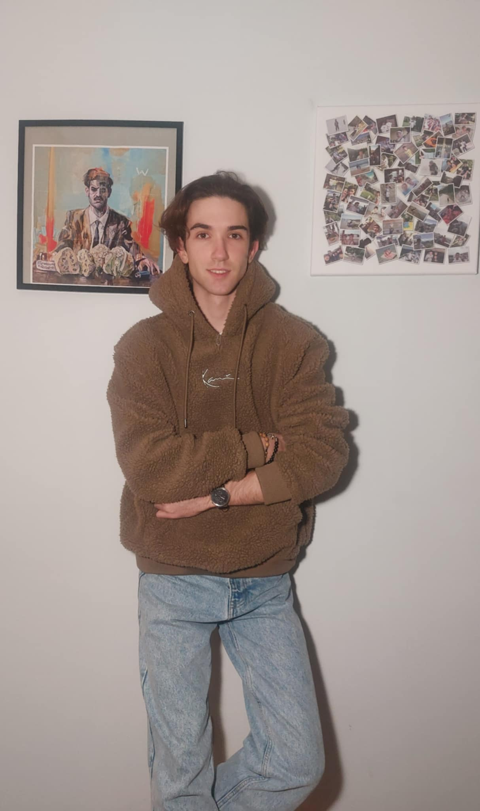

Paweł Kędzierski
Jestem studentem informatyki, który pasjonuje się programowaniem oraz eksplorowaniem nowych technologii. Zafascynowany możliwościami, jakie daje świat komputerów, nieustannie poszukuję nowych wyzwań, które pozwalają mi rozwijać umiejętności w zakresie tworzenia oprogramowania, a także poznawać innowacyjne rozwiązania technologiczne. Moje zainteresowanie obejmuje zarówno programowanie aplikacji webowych, jak i systemów operacyjnych, a także rozwój sztucznej inteligencji i analitykę danych. Z chęcią angażuję się w projekty, które łączą kreatywność z technologią, a także pozwalają mi zdobywać praktyczne doświadczenie w rozwiązywaniu realnych problemów.